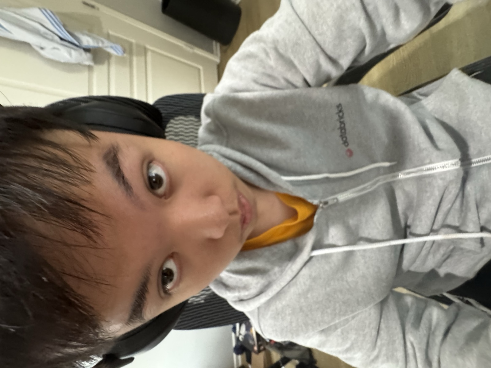
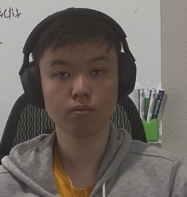
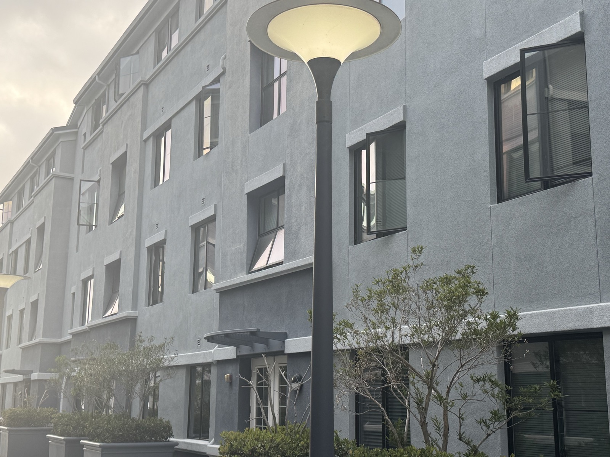
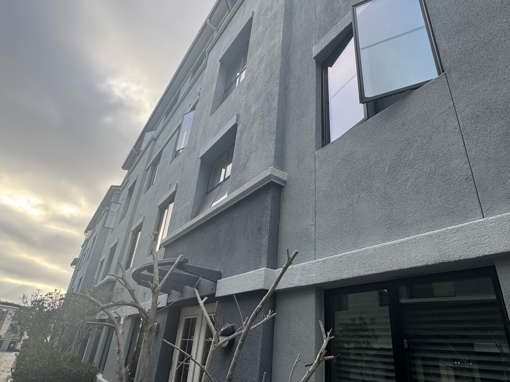
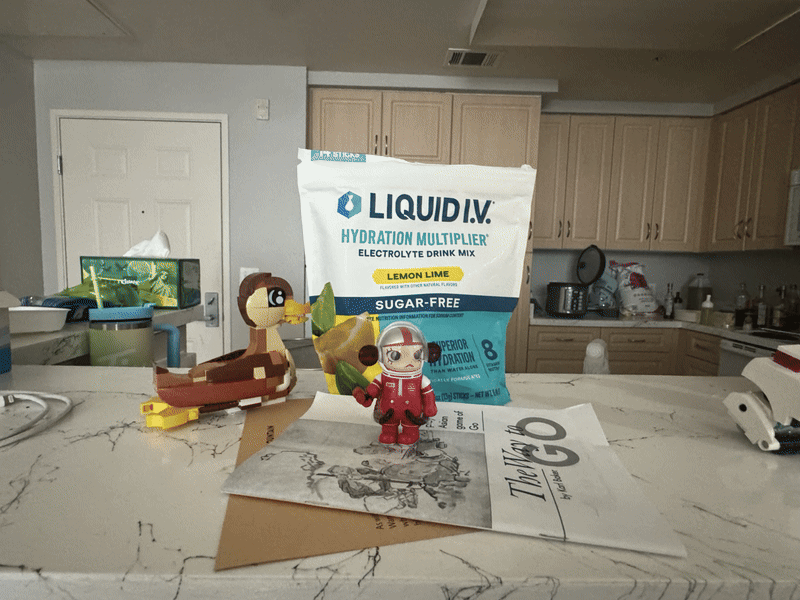
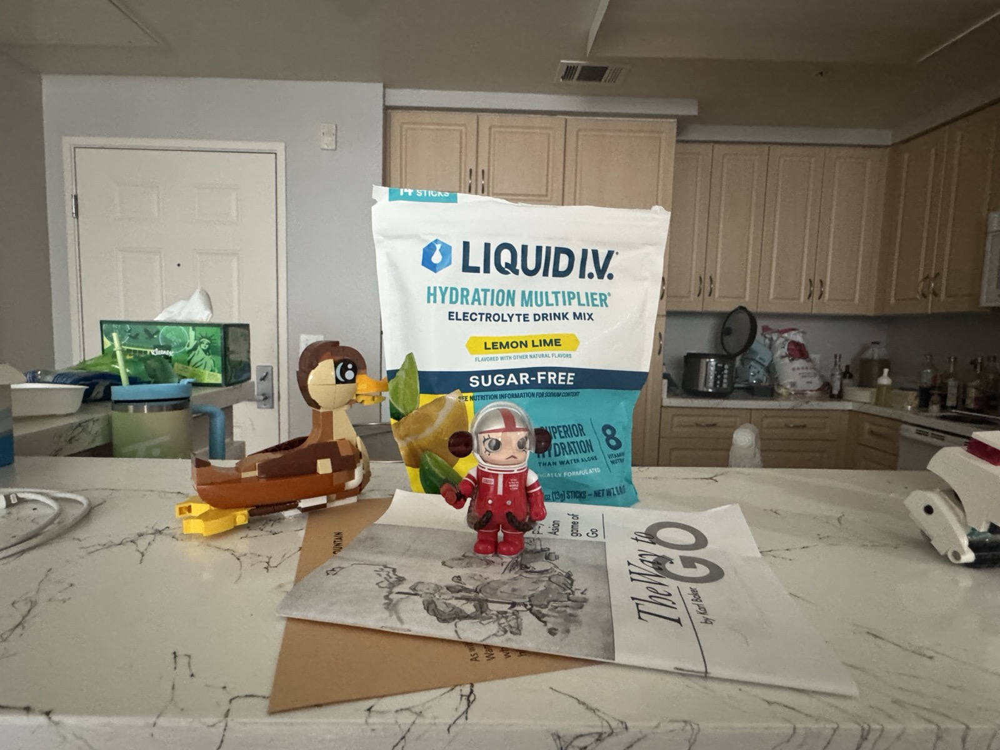
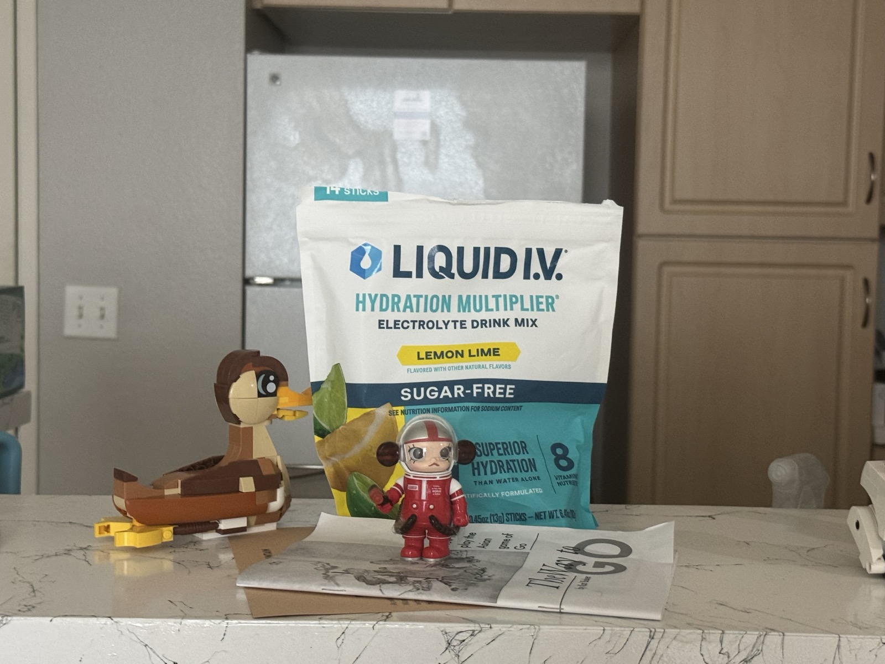
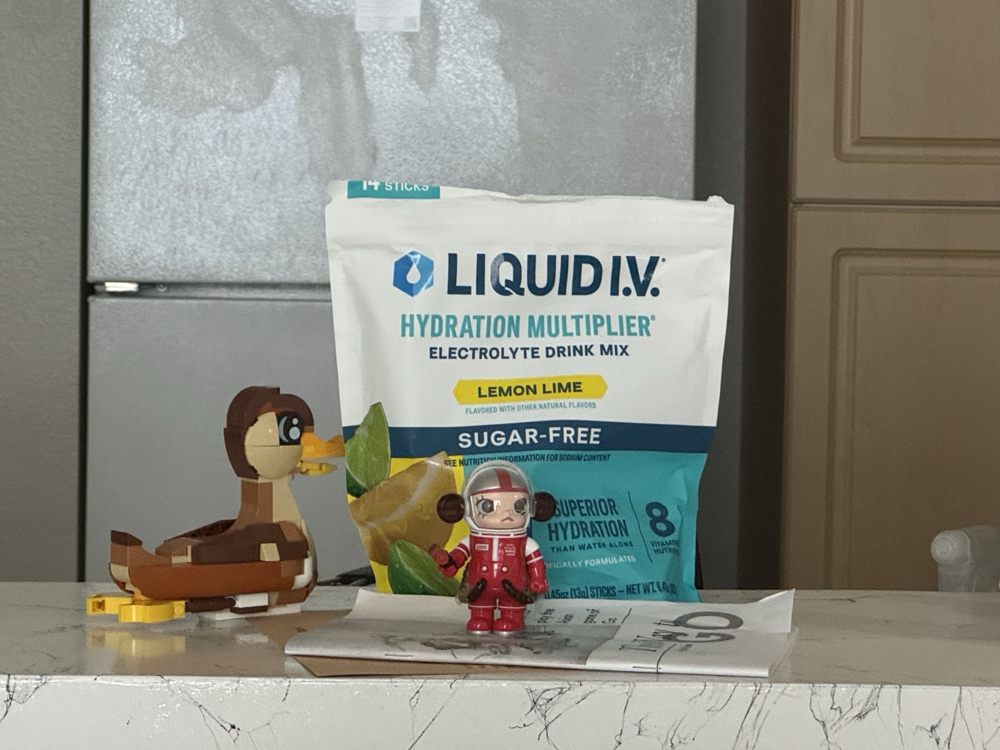
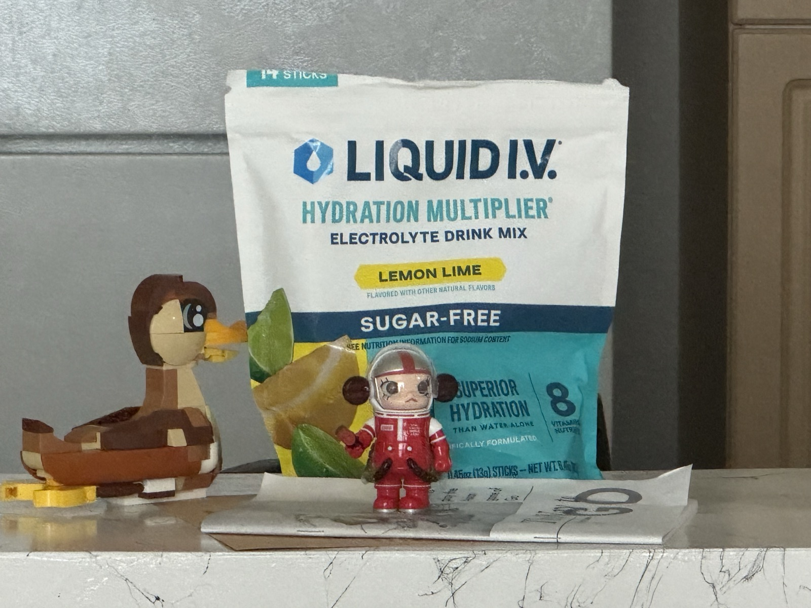
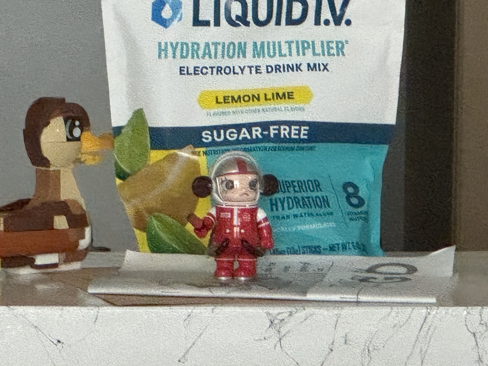

Project 0
Part 1


I shot the close one from about 20 cm with the camera tilted upward, which did two things at once. My forehead and nose ended up almost directly against the lens because of the distance and tilt — less than 10 cm — while my ears sat 20+ cm back. That is close to a 2:1 ratio, so I end up looking like I have a big forehead and everything behind it falls away. Then I backed up. My nose and forehead is still nearer than my ears, but adding three meters to both turns 10/20 into roughly 310/320 — a ratio of about 1.03 — and the distortion collapses with it. (think about adding 300 to both sides of a fraction, it stabilizes the ratio)
Part 2


Exactly the same effect as the face, scaled up to a building. From far away, the near corner of the facade and the far corner differ in distance by only a small fraction of the total, so both walls project at nearly the same scale and the building looks flat. Walking in makes that same gap a large fraction of the distance: like what happens to my nose and ear.
Part 3

The individual frames





Walking backward shrinks near things much faster than far things. Doubling my distance from the astronaut halves it, while the cabinets eight meters off barely change at all. Zooming in then scales everything back up by the same factor. Tune the two against each other so the astronaut cancels out exactly, and the background is left visibly swelling behind it — the subject holds still while the room rushes forward.